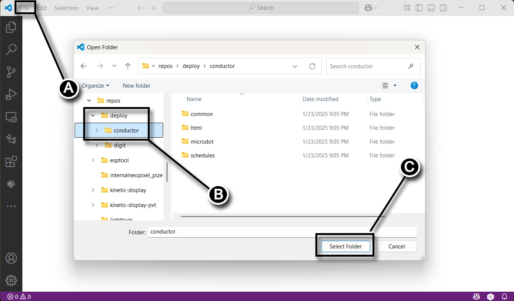
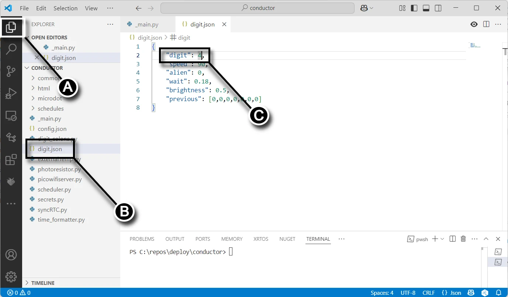
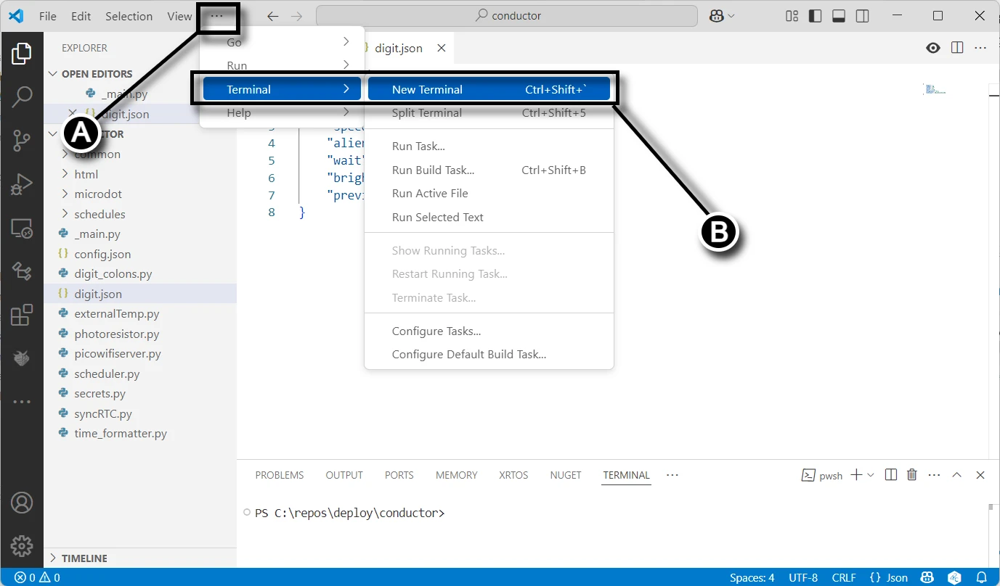
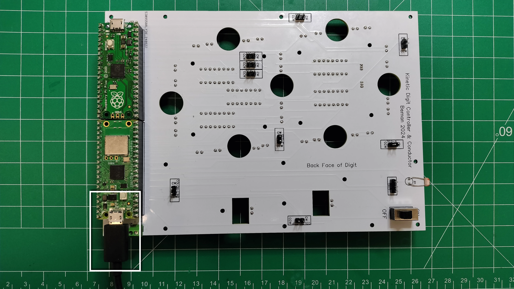
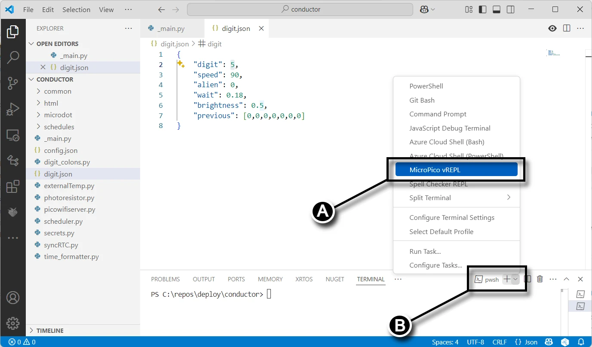
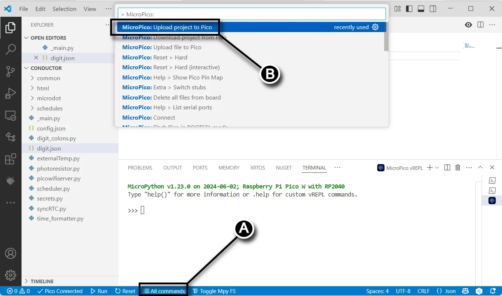

Deploy the Conductor Project to the Conductor PCB¶
In this guide you will upload code from the conductor folder on your computer to your Raspberry Pi Pico W 2040.
Prerequisites¶
- Completed the assembly and soldering of the conductor PCB.
- Created a fork of the Kinetic-Display GitHub repository. See Software and Microcontroller Preparation.
- Deployed the digit and controller directories. Also, see Software and Microcontroller Preparation.
Configure and Deploy the Conductor Project¶
- Connect your computer to the conductor PCB Pico W 2040 as described in Verify Micropython on your Raspberry Pi Pico.
- Open VS Code and follow the steps below:
- (A) Select File -> Open Folder....
- (B) Navigate to the deploy/conductor folder you deployed during step 4 in the section Fork and Clone the Repository.
- (C) Click the "Select Folder" button.

- Open the
main.pyfile and make the following changes:- (A) Comment out the call to the
loop()function. - (B) Uncomment the
manual()function. - (C) Rename the
main.pyfile to_main.py.
Don't forget to save the file after making these changes.

- (A) Comment out the call to the
- Create a new terminal in VS Code:
- (A) Click the ellipsis (
...) in the terminal pane. - (B) Select Terminal -> New Terminal from the submenu.

- (A) Click the ellipsis (
- Connect your computer's USB port to the Raspberry Pi Pico W 2040 as shown below:
 - In the terminal pane:
- (A) Select the drop-down menu.
- (B) Click the MicroPico vREPL submenu item.

- Upload the project to the Pico:
- (A) Click All Commands on the status bar.
- (B) In the Command text field, type "Upload" after "> MicroPico: ".
- (C) Select the dropdown MicroPico: Upload project to Pico.

Configuration Options¶
The Kinetic Display can be configured through the web interface after connection to Wi-Fi. The following settings are available:
- Time Format: 12-hour or 24-hour time format (setting:
time) - Motor Speed: Controls the speed of segment movements (setting:
speed) - Wait Time: Delay between segment movements in milliseconds (setting:
wait) - Temperature Unit: Celsius or Fahrenheit (setting:
tempCF) - Schedule: The event schedule file to use (setting:
schedule) - Digit Test at Startup: Enable or disable the digit test animation when the display starts up (setting:
enable_test_digits) - Set to
trueto enable the digit test (default) - Set to
falseto disable the digit test
Disabling the digit test at startup can be useful in environments where the mechanical noise of the segment movements might be disruptive, or when you want the display to start showing the time immediately.
Congratulations on successfully uploading the code to the conductor's Raspberry Pi Pico W!